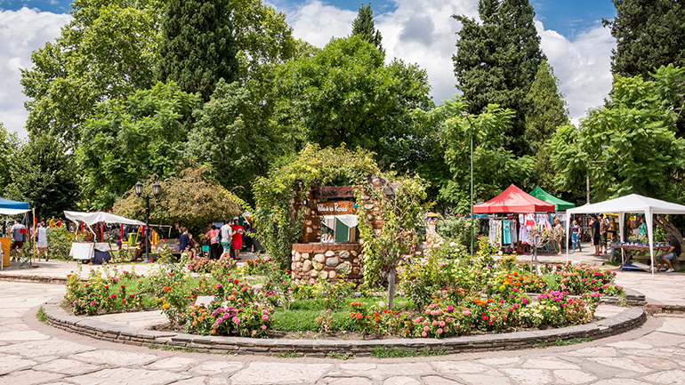

A solo 200m de la terminal de Omnibus
Desde la terminal de ómnibus podrás encontrar colectivos de la linea Panaholma, Sarmiento y Sierra Bus, que recorren todo el largo del valle desde Villa Cura Brochero hasta Villa Dolores con una frecuencia de no mas de 20 minutos. Ideal para desconectarse y salir a conocer otros hermosos paisajes como los ríos de Nono, o la famosa feria de artesanos de Villa de las Rosas.
